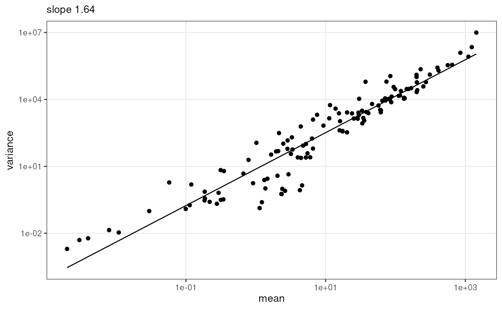
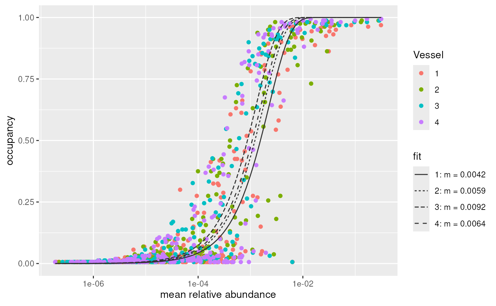
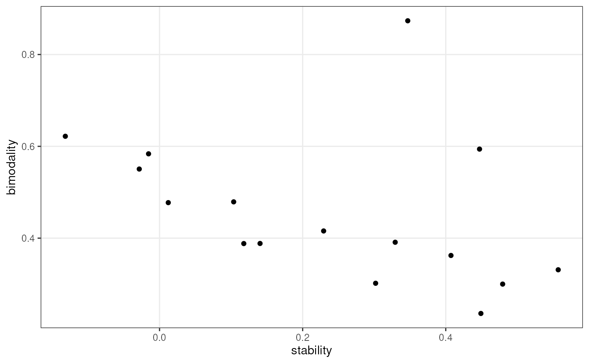

Plot two statistics of each feature with a fit
Source:R/AllGenerics.R, R/plotFeatureScatter.R, R/zzz-mae.R
plotFeatureScatter.RdplotFeatureScatter() draws one point per feature from two
statistics, computed from an assay or read from rowData(x), and
optionally a fitted curve: Taylor's power law of mean and variance, or
the neutral model of occupancy and mean relative abundance.
Usage
plotFeatureScatter(x, ...)
# S4 method for class 'SummarizedExperiment'
plotFeatureScatter(
x,
x.stat,
y.stat,
assay.type = "counts",
fit = c("none", "power", "neutral"),
group.by = NULL,
...
)
# S4 method for class 'MultiAssayExperiment'
plotFeatureScatter(x, ..., experiment = 1L)Arguments
- x
a
SummarizedExperimentobject.- ...
additional arguments passed to
geom_point.- x.stat, y.stat
Character scalar. Statistics on the axes:"mean","variance","cv"(coefficient of variation) or"occupancy"(share of samples with a value above zero) ofassay.type, or a numeric column ofrowData(x).- assay.type
Character scalar. Specifies the assay the statistics are computed from. (Default:"counts")- fit
Character scalar. Draws no fit ("none"), a straight line on log-log axes ("power", Taylor's law), or the neutral model ("neutral"), which needsx.stat = "mean"andy.stat = "occupancy"of counts. (Default:"none")- group.by
Character scalar. Specifies the column fromcolData(x)that splits the samples; statistics and fits are computed within each group. (Default:NULL)- experiment
Character scalarorinteger scalar. For aMultiAssayExperiment, the experiment to plot; its samples get thecolDataofx. (Default:1L)
Details
With fit = "power", both axes are log10 and the subtitle gives
the slope. With group.by, each group has its own curve in its
colour. With fit = "neutral", the mean is of relative abundances
and the curve is \(1 - F(1/N; Nmp, Nm(1-p))\), with \(F\) the beta
distribution function, \(N\) the mean sample total, \(p\) the mean
relative abundance and the migration rate \(m\) fitted by least
squares; the subtitle gives \(m\). With a fit, features with a zero
statistic on a log axis are not drawn and are left out of the fit.
References
Taylor LR (1961). Aggregation, variance and the mean. Nature 189:732-735.
Sloan WT, et al. (2006). Quantifying the roles of immigration and chance in shaping prokaryote community structure. Environmental Microbiology 8(4):732-740.
Examples
data("hitchip1006", package = "miaTime")
tse <- hitchip1006[, hitchip1006$time == 0]
# Taylor's law of the genera
plotFeatureScatter(tse, x.stat = "mean", y.stat = "variance",
fit = "power")

# Occupancy against mean relative abundance in four artificial guts
data("SilvermanAGutData", package = "miaTime")
plotFeatureScatter(SilvermanAGutData, x.stat = "mean",
y.stat = "occupancy", fit = "neutral", group.by = "Vessel")

# Stability against bimodality of each species in one bioreactor, both
# computed by miaTime
data("minimalgut", package = "miaTime")
tse <- minimalgut[, minimalgut$StudyIdentifier == "Bioreactor A"]
tse <- mia::transformAssay(tse, method = "clr", pseudocount = 1)
tse <- miaTime::addStability(tse, time.col = "Time.hr",
assay.type = "clr")
tse <- miaTime::addBimodality(tse, assay.type = "clr")
plotFeatureScatter(tse, x.stat = "stability", y.stat = "bimodality")
